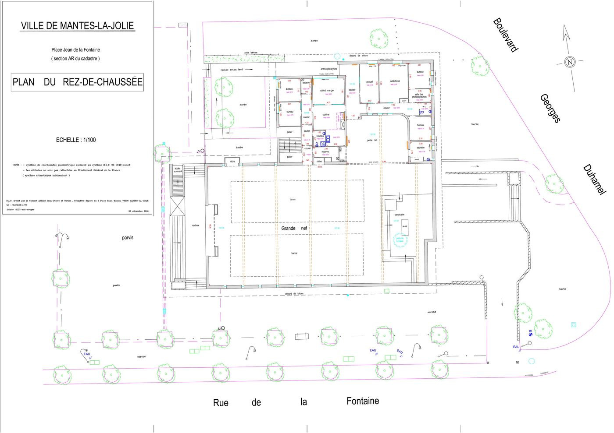
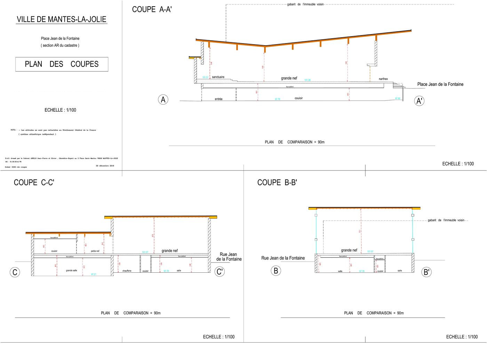
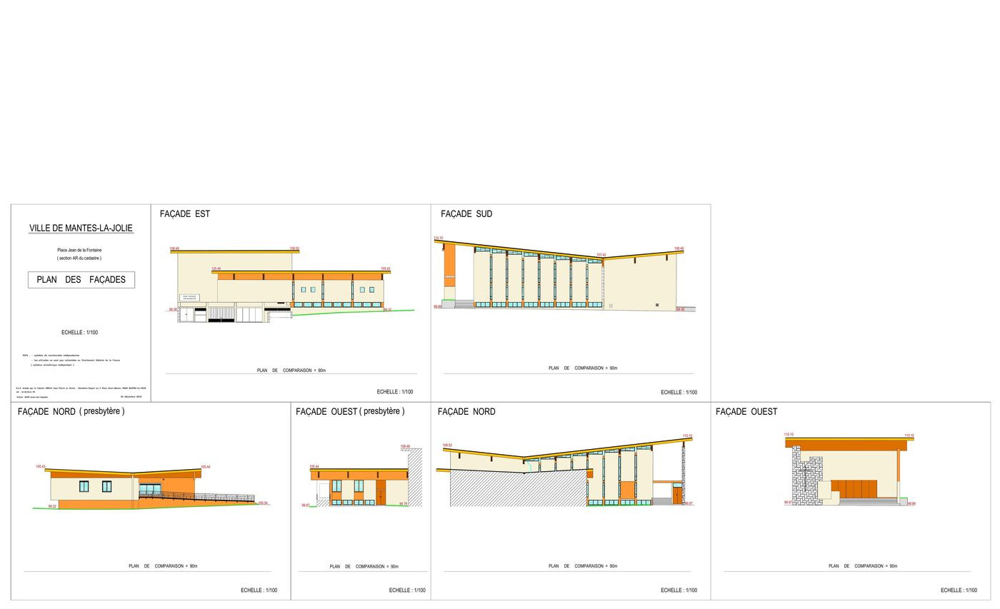
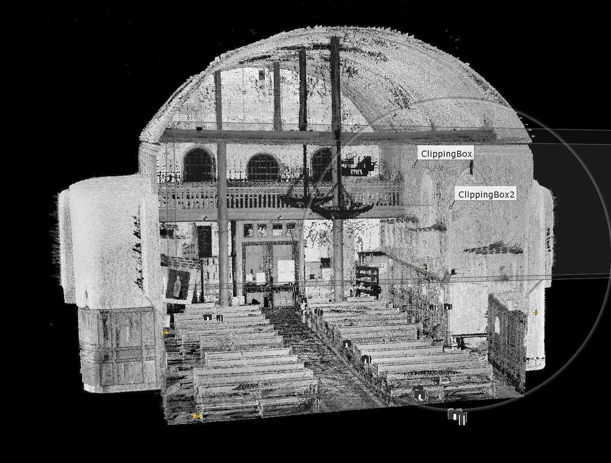
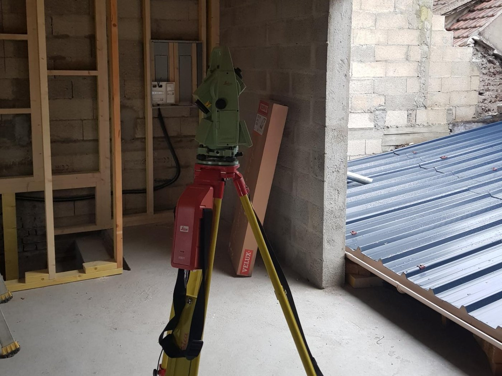
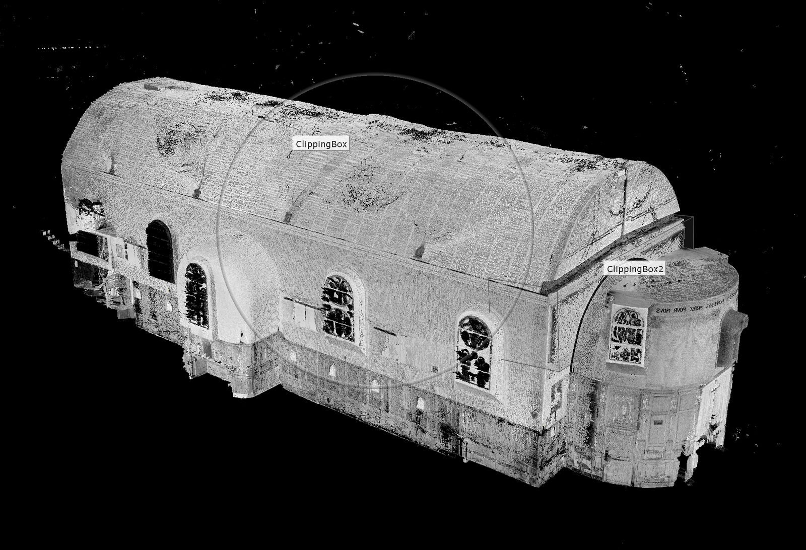
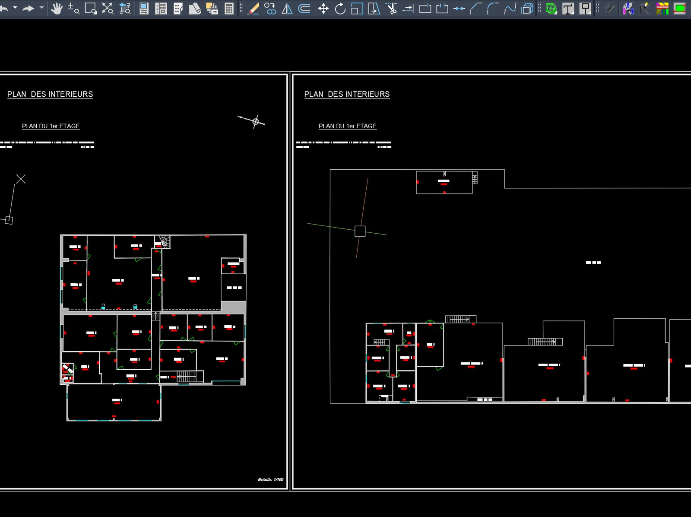

L'état des lieux d'un bâtiment
Les plans d'origine, quand ils existent, décrivent le bâtiment tel qu'il devait être construit. Rarement tel qu'il l'a été, et jamais tel qu'il est devenu après cinquante ans de modifications.
Le relevé mesure le bâtiment existant : plans de chaque niveau avec les épaisseurs réelles de murs, hauteurs sous plafond, ouvertures, escaliers, poteaux et retombées, coupes qui montrent comment les niveaux s'articulent, façades avec leurs percements et leurs modénatures.
C'est le document de travail de l'architecte, du bureau d'études structure, du thermicien. C'est aussi la base des plans de copropriété et des mesurages de superficie.
Livraison en DWG et DXF pour le dessin, en PDF à l'échelle pour la diffusion.
Un relevé complet : une église et sa maison paroissiale
Un même bâtiment, trois documents complémentaires. C'est l'ensemble qui constitue le relevé — un plan seul ne suffit jamais à décrire un édifice.



Le scanner 3D
Sur les bâtiments complexes, la mesure point par point atteint vite ses limites. Le scanner laser enregistre l'intégralité de ce qu'il voit, en quelques minutes par station.
Le résultat est un nuage de points : plusieurs millions de points mesurés, chacun avec ses coordonnées et sa couleur. Les stations successives sont ensuite assemblées en un modèle unique et cohérent.
De ce nuage, nous extrayons ce dont vous avez besoin : plans, coupes à n'importe quel endroit, élévations de façade, profils. L'avantage décisif est qu'on peut y revenir : une cote oubliée se retrouve dans le nuage, sans retourner sur place.
La modélisation à partir d'un nuage de points — lire la publication d'Olivier Abello sur LinkedIn →
C'est la méthode que nous employons pour les charpentes, les édifices anciens, les volumes irréguliers et les bâtiments industriels.
Notre matériel
Du terrain au plan



Les questions qu'on nous pose
Faut-il vider les pièces avant le relevé ?
Non. Nous relevons des bâtiments meublés et occupés tous les jours. Il faut simplement pouvoir accéder aux murs, aux angles et aux ouvertures. Prévenez-nous si des locaux sont fermés ou occupés à certaines heures : c'est le seul vrai obstacle.
Quelle précision ?
Sur un plan de bâtiment, comptez de l'ordre du centimètre. Ce n'est pas une limite de l'appareil : le scanner mesure chaque point à quelques millimètres près. C'est la matière qui commande — un mur ancien n'est ni droit ni d'épaisseur constante — et l'échelle de restitution qui fixe le niveau de détail utile. Lorsqu'un ouvrage exige mieux, c'est une autre mission, avec sa méthode propre : nous le précisons alors au devis.
Le scanner 3D est-il toujours nécessaire ?
Non, et nous ne le sortons pas systématiquement. Ce n'est pas une question de prix, c'est un choix de méthode. Pour un appartement ou une maison de dimensions courantes, le mesurage au distancemètre laser suffit souvent ; ailleurs, c'est la station totale ; sur les volumes complexes, les charpentes, le patrimoine et les grandes surfaces, le scanner s'impose. Le choix dépend du bâtiment, de ce que vous attendez du relevé et de l'usage qui en sera fait ensuite — un plan de vente et un projet de restructuration ne demandent pas le même document. Nous en convenons avec vous au moment du devis.
Livrez-vous le nuage de points lui-même ?
Oui, sur demande, aux formats d'échange courants. Beaucoup d'architectes travaillent aujourd'hui directement dans le nuage. Nous précisons alors le système de coordonnées et la densité de points.
Un bâtiment à relever ?
Le cabinet intervient à Mantes-la-Jolie, à Limay et dans toute la vallée de la Seine. Dites-nous ce que vous projetez : nous vous indiquerons quels documents relever et à quelle échelle.